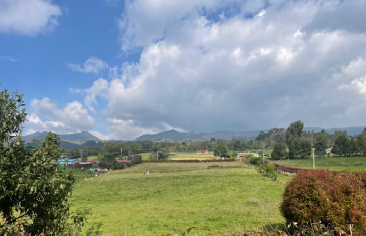
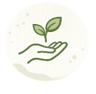
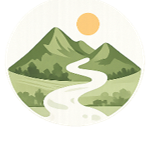
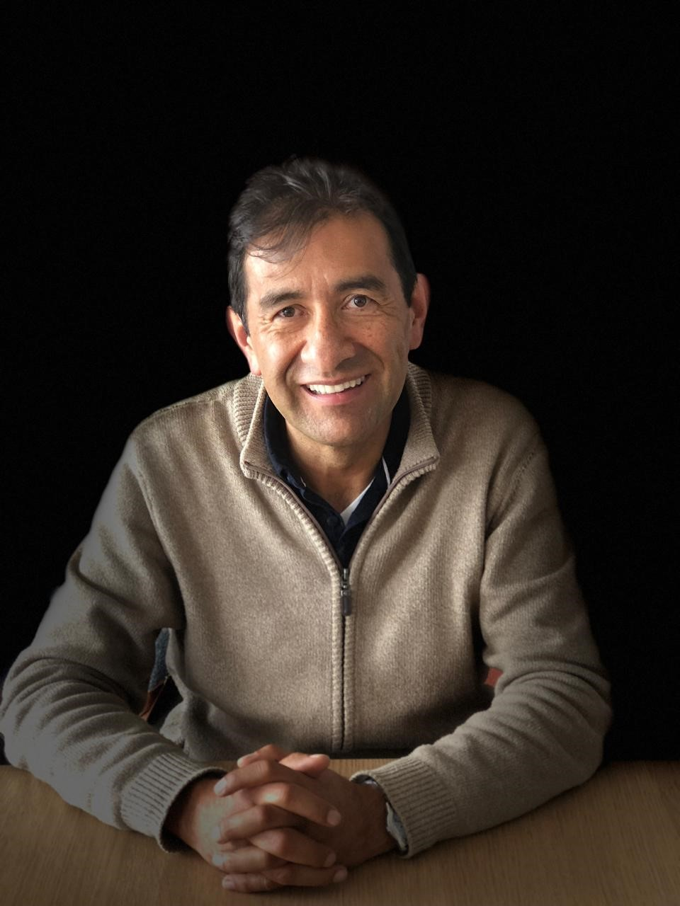

Opa Lacho Vida Buena es un proyecto enfocado en el bienestar, la sostenibilidad y la producción responsable. Buscamos conectar la naturaleza, la alimentación saludable y el desarrollo humano a través de productos y servicios que promueven una vida más consciente, equilibrada y natural.
Trabajamos desde la regeneración del entorno, el respeto por la tierra y la creación de hábitos saludables que beneficien tanto a las personas como a la comunidad.
La Fortuna de Siecha (2,7 Ha)

Vereda Trinidad, Guasca, Cundinamarca

MISIÓN
Ofrecer productos y servicios enfocados en el bienestar, la sostenibilidad y la valoración, inspirados en el modelo Vida Buena, promoviendo hábitos saludables, producción responsable y procesos de mejora personal y colectiva.

VISIÓN
Ser una marca reconocida por impulsar un estilo de vida saludable y sostenible, integrando naturaleza, bienestar y producción consciente para contribuir al desarrollo de comunidades más equilibradas y respetuosas con el entorno.
Emprendedor y Soñador
HORACIO RINCON VELANDIA
Ingeniero civil nacido en Zapatoca, Santander en 1961, egresado de la Universidad Nacional de Colombia en 1986, con estudios de magister en administración en la Universidad de Los Andes, Executive Master Business Administration, EMBA, graduado en 2011 y un Master of Global Management, MGM de Tulane University en 2014. Cuenta con 25 años de experiencia en la gestión de proyectos del sector energético, en gas y petróleo, logrando un éxito con la empresa de consultoría en ingeniería y medio ambiente, GEOINGENIERIA, que operó entre 1990 y 2010. Esta empresa con más de 500 empleados fue vendida en 2011 al Grupo Holandés ANTEA.
El Ingeniero Rincón ha desarrollado varios emprendimientos entre 2010 y 2025, en el sector agrícola y de servicios en alimentos; es miembro fundador de la Sociedad Operadora de Proyectos, SOP, una empresa que opera y comercializa desde 2018 cultivos de arándanos en el Departamento de Cundinamarca. Actualmente, es atleta de alto rendimiento; ha corrido varias maratones (42,195 Km) a nivel mundial en especial la mítica Boston en dos ocasiones. Además, es miembro del Comité Directivo de la Sociedad Operadores de Proyectos, SOP y es fundador del emprendimiento, Opa Lacho Vida Buena, un proyecto de regeneración ambiental, tienda y escuela de bienestar.
